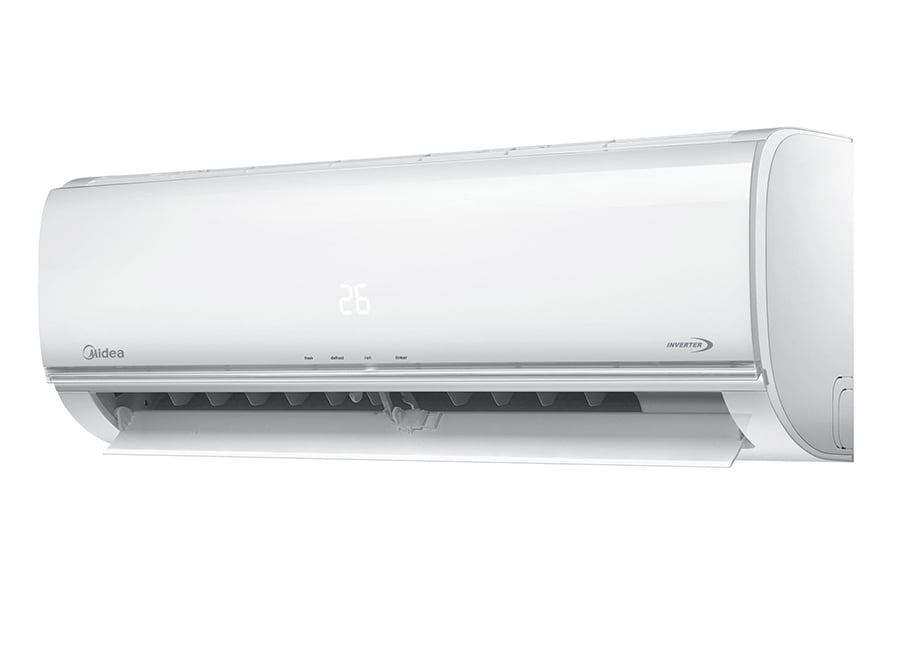

Midea AF-09N1C2 (25-30 m2, Inverter)
1399 ₾

ზოგადი ინფორმაცია
შეთავაზება:
ფასდაკლება
ბრენდი:
Midea
მოდელი/PN:
AF-09N1C2
ტიპი:
სპლიტ სისტემა
ეკრანი:
დიახ
კონდიციონერის პარამეტრები
რეკომენდირებული ფართი:
25 - 30მ²
გაგრილების სიმძლავრე (BTU):
9000
გათბობის სიმძლავრე (BTU):
9000
შიდა ბლოკის მაქსიმალური ხმაურის დონე:
37
გარე ხმაურის მაქსიმალური დონე:
55
რეჟიმი
გაგრილება:
დიახ
გათბობა:
დიახ
ვენტილატორის რეჟიმი:
დიახ
ავტომატური გადატვირთვა:
დიახ
სწრაფი გაგრილება:
დიახ
ღამის რეჟიმი:
დიახ
კომპრესორი
გამაგრილებელი:
R410A
კომპრესორის ტიპი:
ინვერტორი
ენერგომოხმარება
გაგრილების ენერგიის მოხმარება:
822W
გათბობისას ენერგიის მოხმარება:
812W
წამზომი
ტაიმერი:
დიახ
დისტანციური მართვა
დისტანციური მართვა:
დიახ
ფერი
ფერი:
თეთრი
ზომები
გარე ერთეული:
50 x 72 x 27 cm
შიდა ბლოკი:
29 x 72 x 20 cm
წონა
შიდა ბლოკი:
8
გარე ერთეული:
23კგ
გარანტია
გარანტია ფიზიკური პირისთვის:
48 თვე
view this conditioner here:Link